Boutique - carnetterie
Vous aimez le fait-main, les beaux objets? Vous aimez écrire, dessinez, peindre, rêver? Cette page est faite pour vous!
Petit carnet montagnes
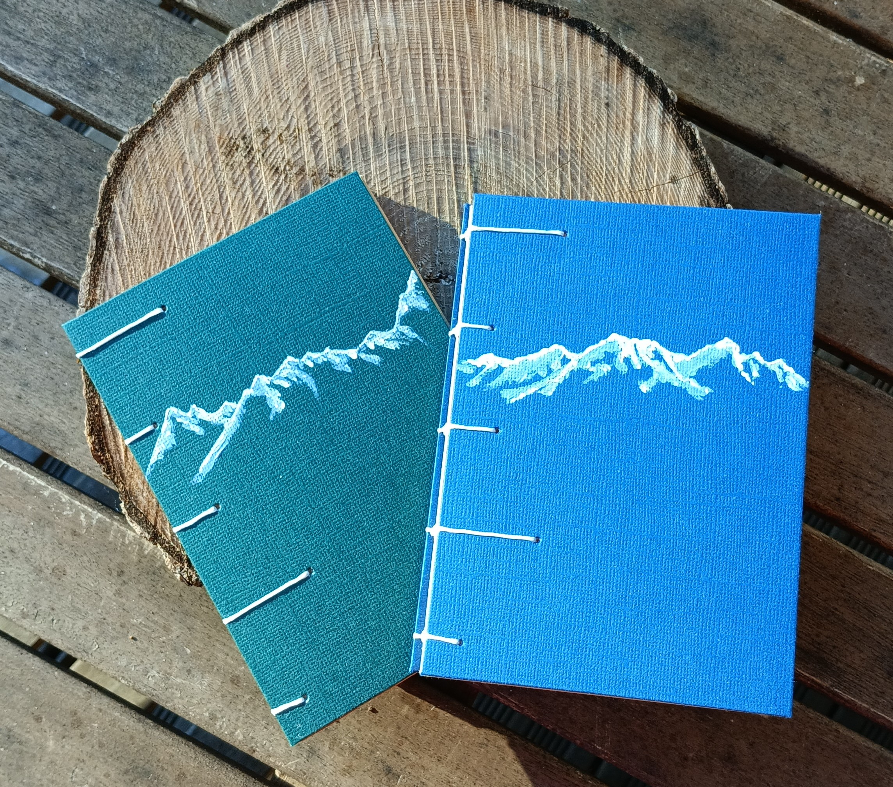
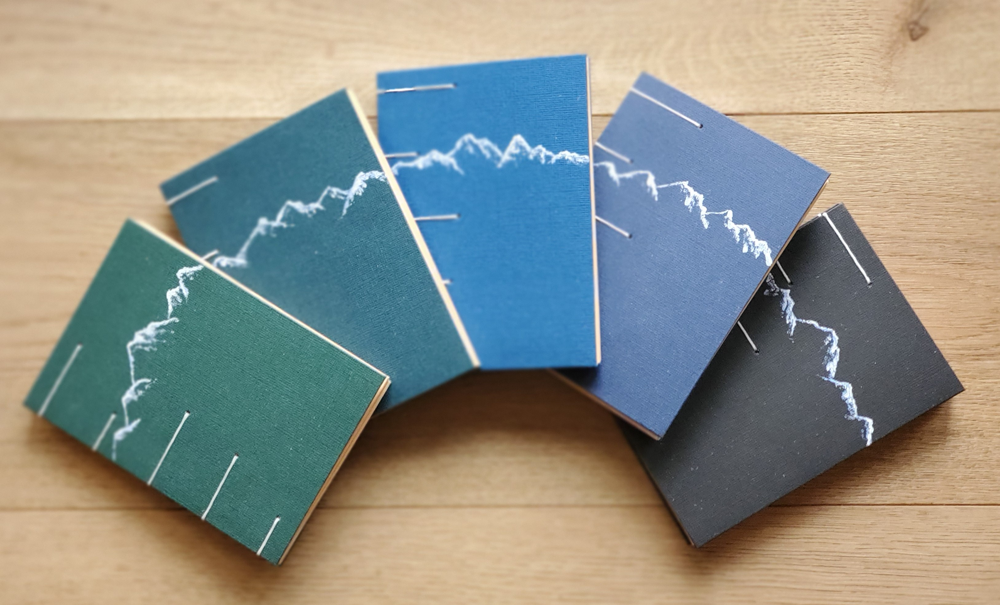
Ce carnet est parfait pour les explorateurs, grâce à son petit format et à sa reliure robuste, il peut être transporté partout! Pour pouvoir écrire en montagne, à la plage, sur un banc en ville, ou bien sûr chez soi de retour d'une aventure! Coloris disponibles: noir, bleu ardoise, lapi lazuli, bleu canard, bleu pétrole et vert forêt.
Carnet format A6, reliure copte, 64 pages couleur chamois de 160 g/m2. Motif sur la couverture peint à l'acrylique.
48 €
Carnet érable du Japon
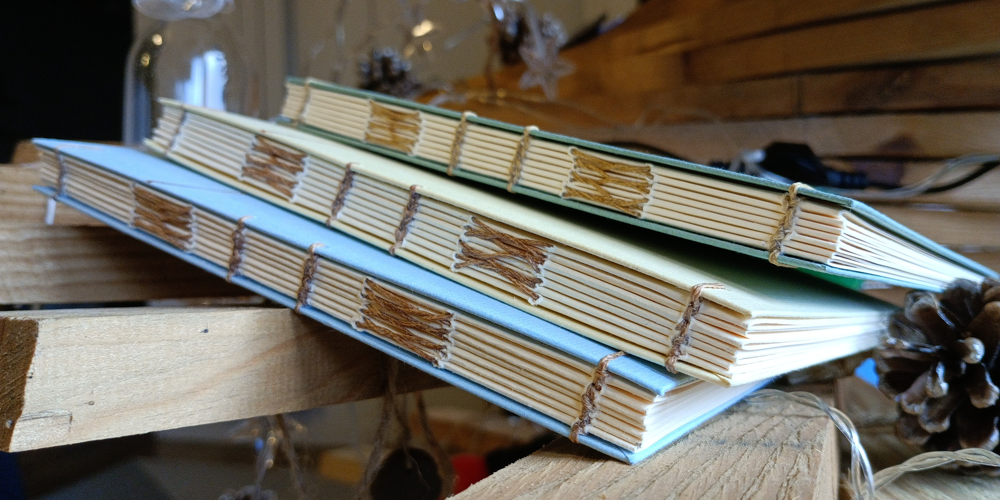
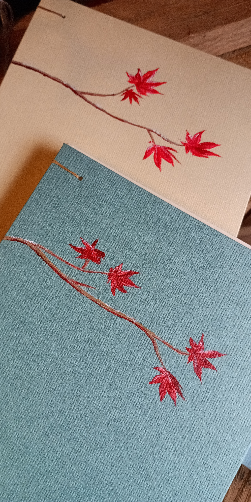
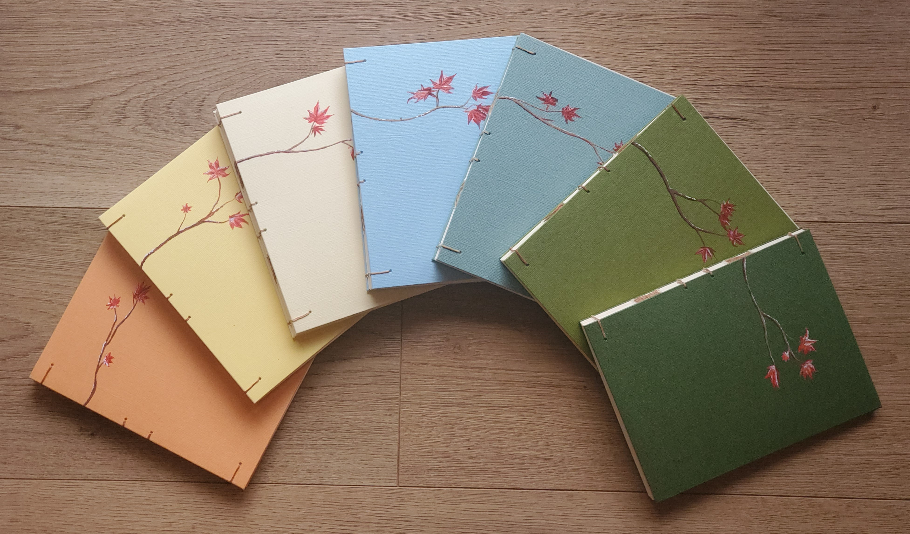
Compagnon idéal à poser sur votre table de chevet ou sur votre étagère préférée, il sera prêt à accueillir vos pensées, vos idées sous toutes ses formes.
Carnet format 17 x 13,2 cm², reliure croisillons, 56 pages couleur chamois de 160 g/m2. Motif sur la couverture peint à l'acrylique.
75 €
Petit album
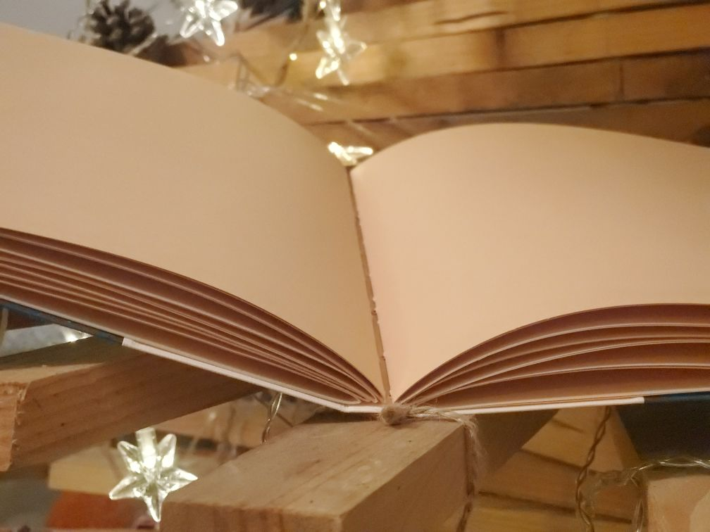
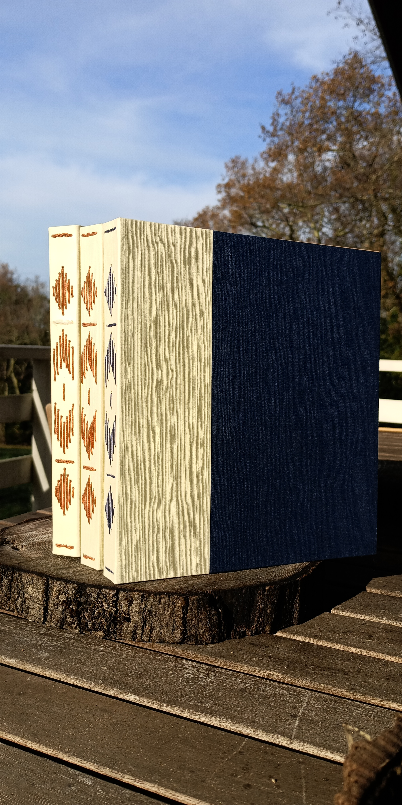
En différentes couleurs :
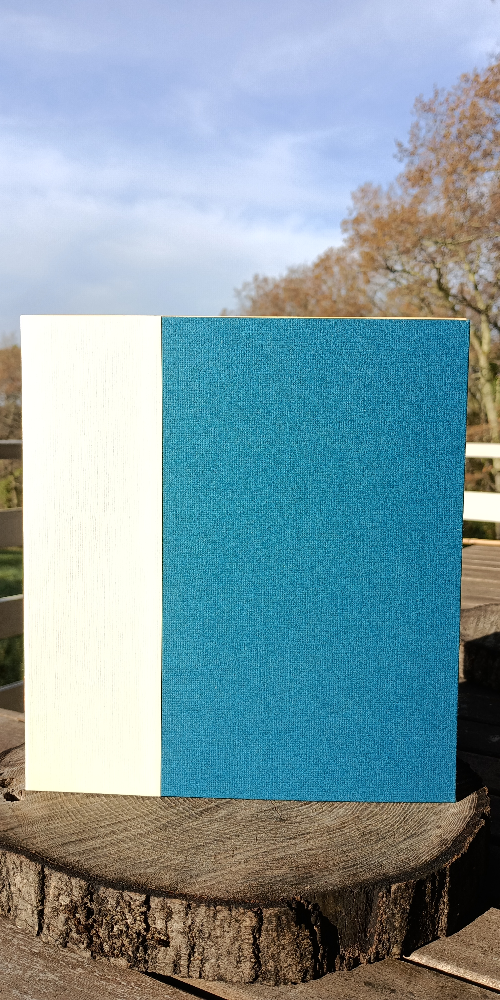
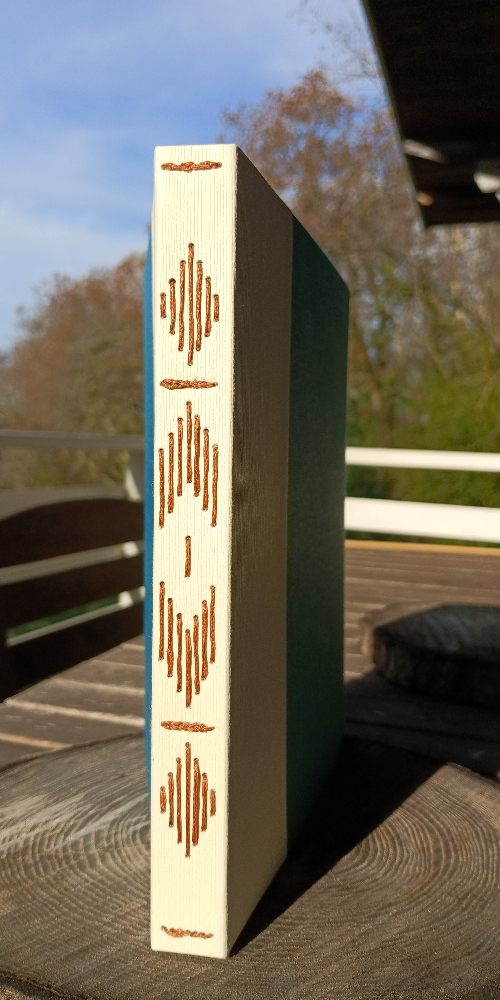
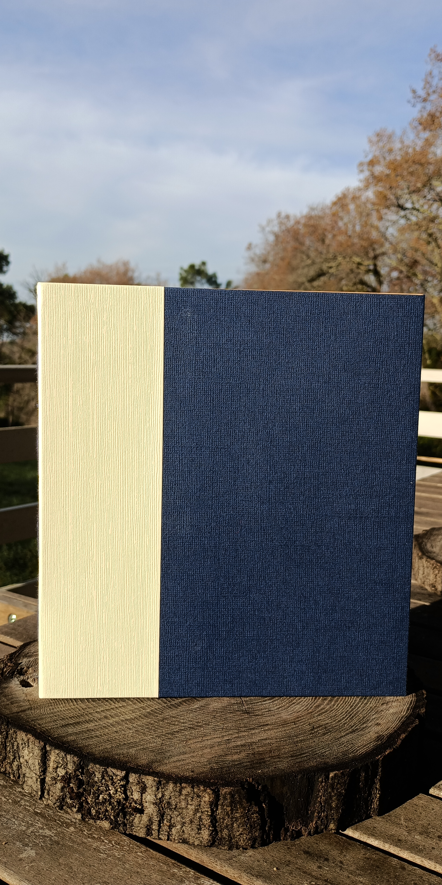
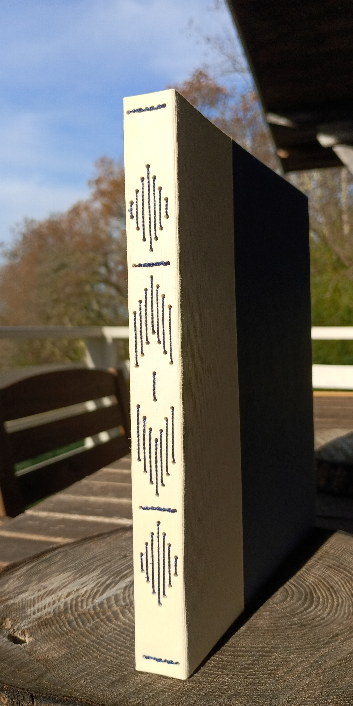
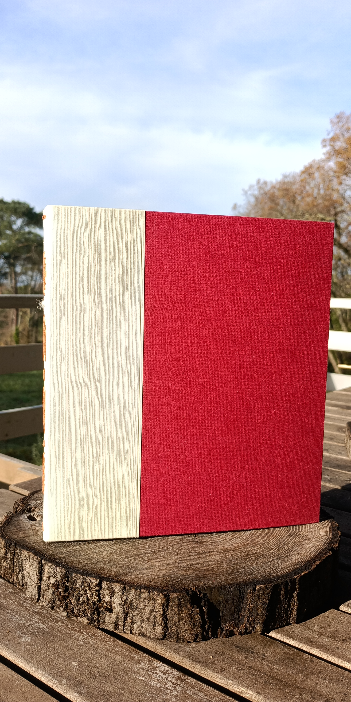
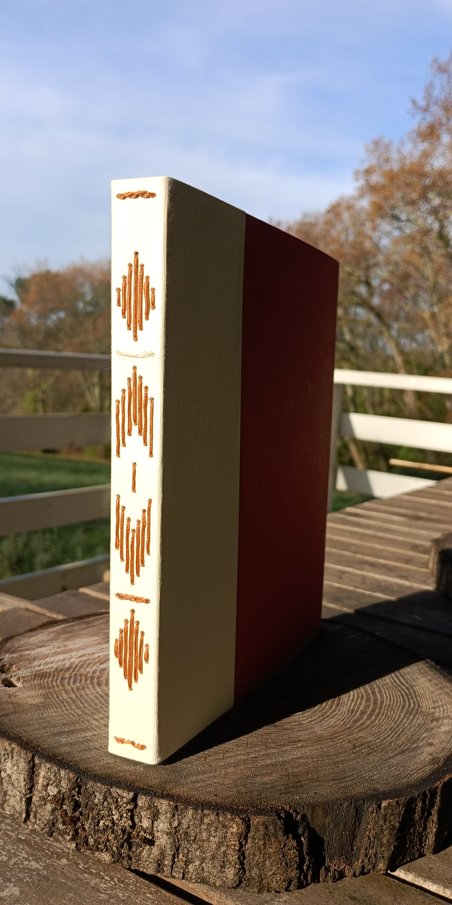
Avec son format généreux, cet album peut servir de livre de recettes ou d'album photos. Coloris disponibles : bleu canard, bleu pétrole, rouge.
Carnet format 21 x 19 cm², reliure longstitch à motifs chevrons, 56 pages couleur chamois de 160 g/m2.
102 €
Peinture acrylique personnalisée sur la couverture : + 10 €
Grand album
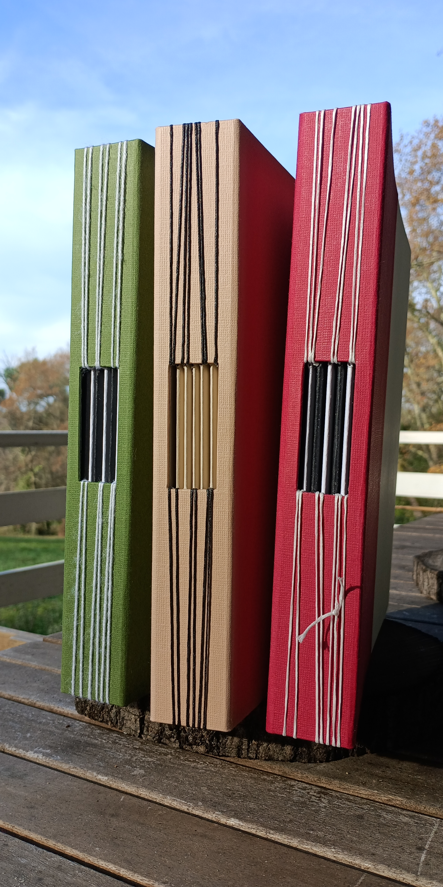
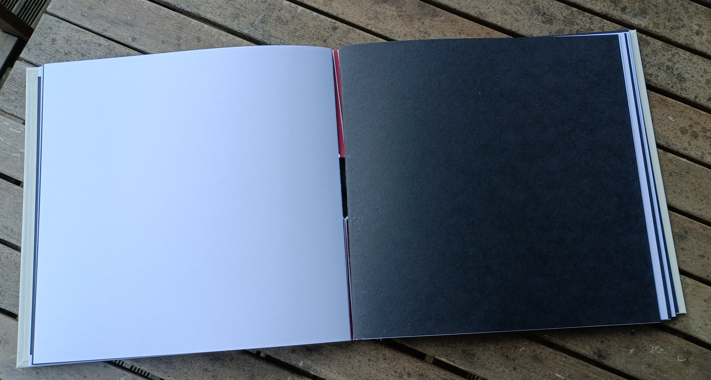
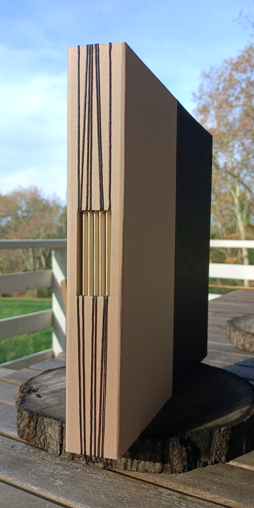
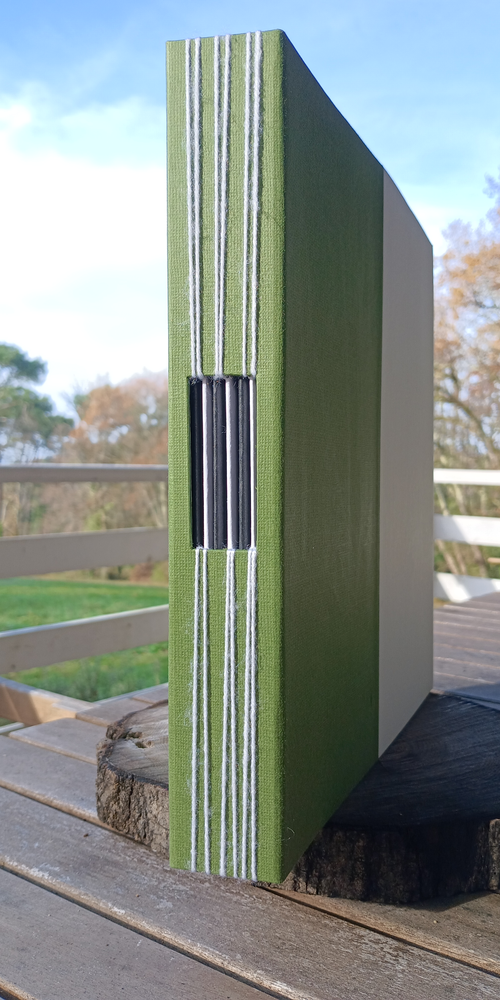
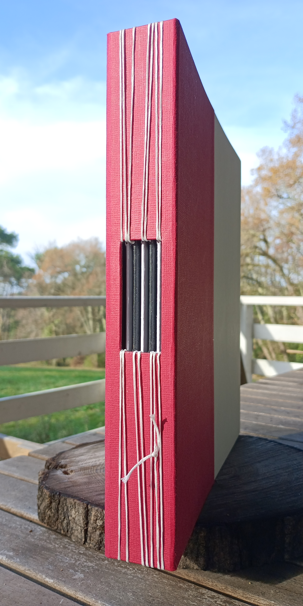
Un album à destination de tous.tes celles et ceux qui souhaitent créer! Album grand format (28 x 28 cm2), 56 pages noires et blanches ou sépia, de 250 g/m2 pour pouvoir coller des photos, peindre, dessiner, écrire, et tout ceci avec un confort incroyable. Le papier ne gondolera pas!
Chaque page peut accueillir jusqu'à 3 photos de 10,5 x 15 cm2.
106 €
Peinture acrylique personnalisée sur la couverture : + 10 €
Pour des coloris particuliers, contactez-moi!